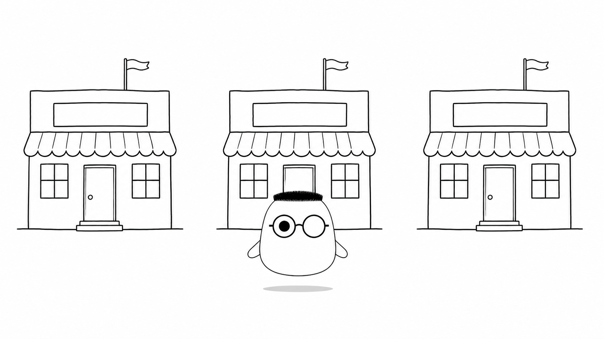
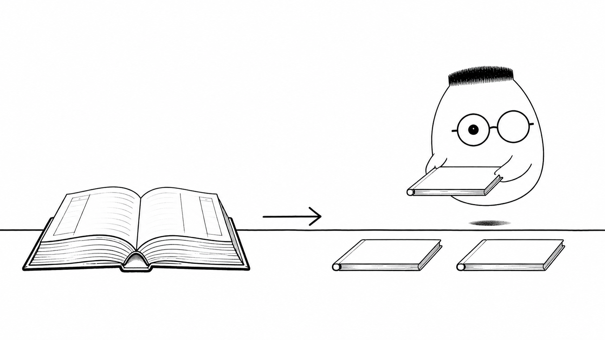
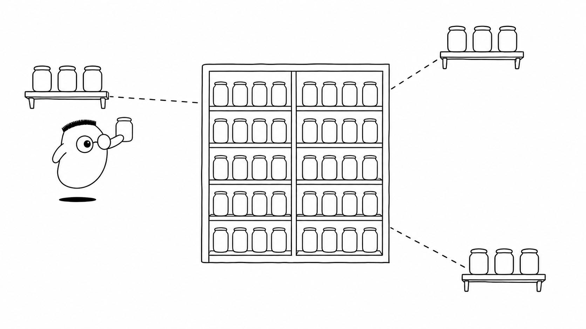

Masalah sehari-hari
Satu gedung restoran bisa melayani banyak tamu. Pada jam makan siang, antrean memanjang dan kasir pertama tidak sanggup menerima semuanya. Menambah meja di gedung yang sama punya batas.
Analogi Kuka
Kuka mengelola beberapa gedung restoran dengan papan tamu di kantor pusat. Tamu boleh masuk ke cabang mana pun. Kasir di tiap cabang melayani permintaan, lalu membaca dan menulis catatan pada papan pusat.
Kasir tidak menyimpan ingatan tamu di laci pribadinya. Jika satu gedung sakit, papan pusat mengarahkan tamu berikutnya ke gedung yang sehat.
Peta sederhananya
Kasir tanpa ingatan adalah stateless. Papan tamu pusat adalah penyimpanan bersama. Cabang adalah instance server. Membuka lebih banyak cabang adalah scaling horizontal.
Ilustrasi

Ketiga gedung terlihat terpisah, tetapi mereka memakai aturan dan catatan pusat yang sama. Tamu tidak perlu tahu cabang mana yang sedang bekerja.
Penjelasan konsep
Arsitektur stateless membuat semua cabang dapat menangani tamu yang sama. Sesi, file, cache, dan data tamu tinggal di penyimpanan bersama. Cabang tidak menyimpan keadaan penting hanya di dalam prosesnya.
Load balancer menerima tamu di pintu depan. Ia memilih cabang dengan algoritma tertentu. Round robin bergiliran. Least connections memilih cabang dengan antrean koneksi paling pendek. Pilihan algoritma mengikuti bentuk beban kerja.
Proses sharding memecah satu buku besar menjadi beberapa buku. Cabang A menjaga tamu dengan huruf awal A, cabang B menjaga tamu dengan huruf awal B. Permintaan yang tahu kuncinya dapat langsung menuju cabang yang benar.

Model mental scaling dimulai dengan satu pertanyaan: bagian mana yang kewalahan dulu? Tambah cabang untuk kapasitas aplikasi, pecah buku untuk database, dekatkan salinan untuk jarak, atau antrekan pekerjaan berat.
Health check
Load balancer mengirim pemeriksaan ringan ke setiap cabang. Cabang yang gagal menjawab dikeluarkan dari rotasi. Tamu baru menunggu sampai cabang itu sehat kembali.
Read replica
Satu buku utama menyalin isinya ke beberapa buku replica. Permintaan baca dapat dibagi ke salinan. Perubahan baru tetap perlu waktu untuk sampai ke setiap replica.
CDN
CDN menaruh salinan menu di rak yang dekat dengan tamu. Tamu membaca salinan terdekat, jadi mereka tidak perlu berjalan ke kantor pusat setiap kali.

Edge
Edge menaruh meja kecil dekat tamu untuk pekerjaan singkat. Pemeriksaan sederhana selesai di sana. Pekerjaan berat tetap menuju gedung utama.
Pemrosesan asinkron
Pekerjaan berat masuk antrean. Kasir memberi nomor tiket dan segera melayani tamu berikutnya. Dapur belakang menyelesaikan pekerjaan itu tanpa membuat kasir menunggu.
Monolit vs microservice
Monolit memakai satu dapur besar untuk semua hidangan. Microservice memisahkan dapur menurut jenis pekerjaan. Pemisahan memberi ruang tumbuh, tetapi juga menambah koordinasi.
Serverless
Serverless menyewa juru masak saat pesanan datang. Anda membayar pekerjaan yang berjalan tanpa merawat dapur yang selalu menyala.
Diagram alur
Tamu tiba di cabang mana pun. Kasir membaca buku tamu pusat dan memberi jawaban cepat. Jika satu gedung sakit, sistem mengalihkan tamu ke gedung sehat.
Contoh mini
Tamu "A" datang Buku besar: A -> cabang A Buku A: layani tamu "A" Tamu "B" datang Buku besar: B -> cabang B Buku B: layani tamu "B"
Seperti kartu pos, buku besar sudah dipecah per huruf awal. Tamu A langsung menuju cabang A. Tamu B menuju cabang B.
Ringkasan
- Stateless membuat setiap cabang bisa menangani tamu tanpa ingatan lokal yang penting.
- Load balancer membagi tamu memakai algoritma yang sesuai dengan beban kerja.
- Health check mengeluarkan cabang sakit dari rotasi.
- Read replica membagi pekerjaan baca ke beberapa salinan buku.
- Sharding memecah buku besar agar tiap cabang menjaga bagian tertentu.
- CDN dan edge mendekatkan salinan atau pekerjaan ringan kepada tamu.
- Antrean asinkron memindahkan pekerjaan berat ke belakang.
- Monolit, microservice, dan serverless menawarkan cara berbeda untuk membagi tempat kerja.
Pertanyaan pemahaman
- Kenapa kasir tanpa ingatan (stateless) membuat membuka cabang jadi mudah?
- Apa itu memecah buku besar per huruf awal (sharding)?
- Apa pertanyaan yang dijawab oleh semua strategi scaling?
Mau lebih dalam
Versi teknis membahas pilihan infrastruktur dan arsitektur yang membantu sistem melayani lebih banyak tamu.